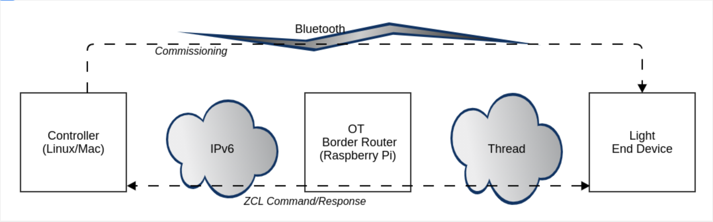

Introduction
This section provides an overview of the Matter 15.4 setup and operation. A typical simple Matter 15.4 (Thread) network setup is shown in the following image.
Matter 15.4 Setup 
The setup consists of the following four elements:
A Controller such as an app running on a phone or the chip-tool running on a Linux box or Raspberry Pi.
An Open Thread Border Router (OTBR) running on a Linux box or Raspberry Pi.
A Radio Co-Processor (RCP), which the OTBR uses to communicate with the Thread network (not shown). This is attached to the Raspberry Pi.
An End Device such as a light or switch, which is the Matter Accessory Device (MAD).
The flow of the setup described above is as follows:
The controller commissions the End Device directly over Bluetooth – this makes the End Device join the Thread network and the Matter “Fabric”.
After commissioning, the Bluetooth connection is terminated and all further communication is done over Matter.
The controller sends ZCL commands, such as the OnOff Toggle, and the End Device performs the corresponding action, such as turning the End Device’s LED on or off
A Matter network can be built in a number of ways using a combination of Silicon Labs hardware, a Raspberry Pi, and any external controller (Macbook, Ubuntu, Android, etc.)
The suggested method involves using a Raspberry Pi to function as both the controller and the OTBR, with a Silicon Labs device as the MAD.
An alternate configuration is to use a Macbook as the controller, a Raspberry Pi as the OTBR, and a Silicon Labs Device as the MAD. This requires additional routing between the controller and OTBR.